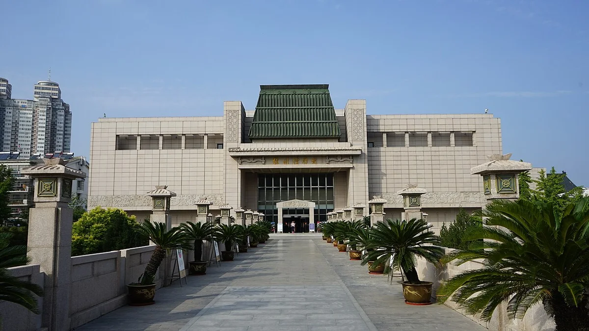

秋日慢行
XIAOMIAO'S POCKET TRIP
← 选择景点
展室总图
徐州 · 10.27 / 人文语音导览
徐州博物馆
一室一主题，一物见大汉
六间展室，精选十四个看点。把藏品的历史、工艺和地位放在一起听。
▶ 先听历史开篇
15 段 · 约 16 分钟

往期实景 ·
照片署名 ↗
01 / 楼层 · 展室 · 代表藏品
展室总览
已听 0
展室主题示意，楼层见标签；室内位置以馆内导览为准。展品可能外借或调整，以当日展签为准。
← 返回总图
▶ 听这段讲解
展开完整讲稿与参考来源
上段
−15秒
+15秒
下段
1×
连播
请开启 JavaScript 后选择展室与播放讲解。